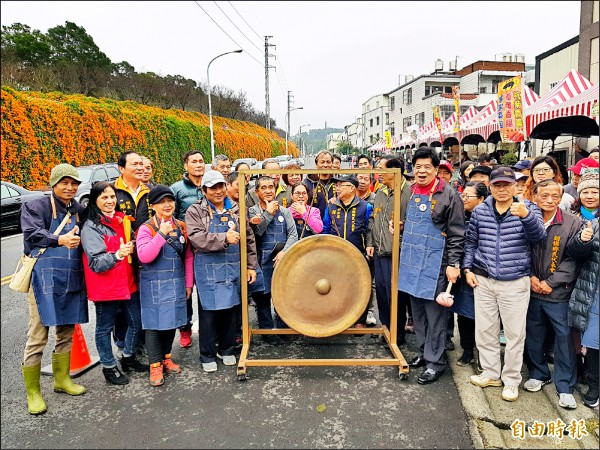
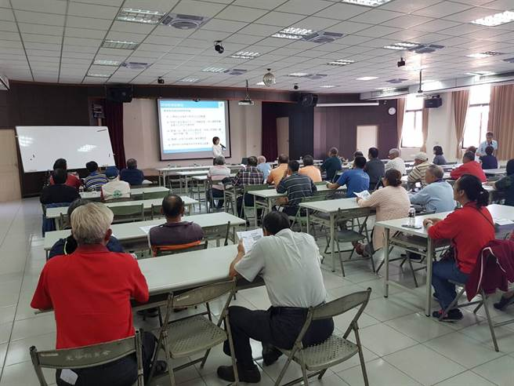
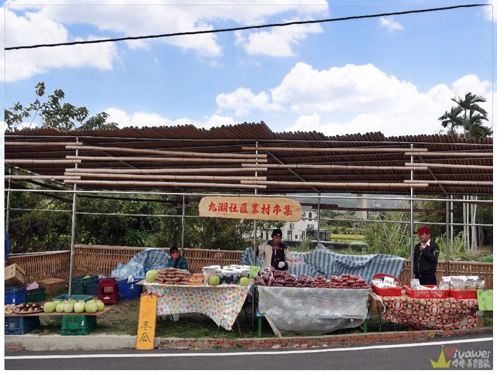

| 服務項目 | 活動細節 | ||||
|---|---|---|---|---|---|
| 舉辦農產品、景點市集 | 銅鑼有杭菊、炮仗花、芋頭等吸引觀光客的元素，可以藉由產物的時令舉辦市集 | ||||
| 工作坊 | 藉由手作的方式，不只是有視覺的體驗，也可以把在銅鑼所做成的作品帶回家，延續此物、此地的認同及喜愛 | ||||
| 農民分享會 | 因為銅鑼在地幾乎都為農業為主，經濟上不甚富裕，可以藉由老師教學、互相交流種植及產品加工的方式，創造更好的經濟利益 |
| 歷年活動 | 活動紀錄 | ||||
|---|---|---|---|---|---|
| 2019.02.18炮仗花市集 |  參與攤販:18攤 參與人數:約2000人/1個月 創造經濟收益:約30萬元 | 2019.05.25杭菊用藥講座 |  參與人數:12位杭菊農夫 學習如何替代農藥，使用有機肥料耕種，創造經濟與環境雙贏局面，新增農民的環保知識。 | 2019.11.17杭菊節市集 |  參與攤販:40攤 參與人數:約5600人/1個月 創造經濟收益:約50萬元 |